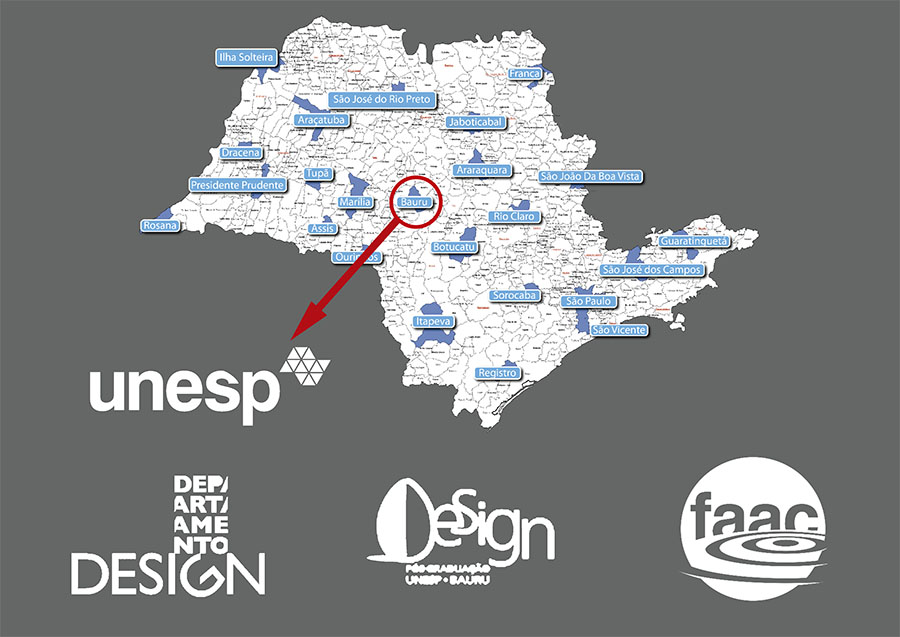
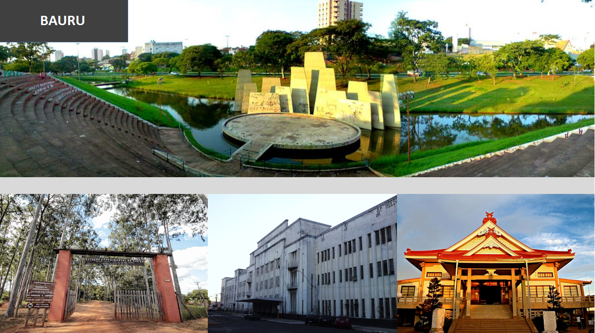

|
 |
A UNESP Universidade Estadual Paulista por meio da FAAC Faculdade de Artes, Arquitetura e Comunicação e do Departamento e do Programa de Pós-Graduação em Design (mestrado e doutorado) têm a honra de sediar a 13ª edição do Colóquio de Moda.
O evento ocorrerá entre os dias 11 a 15 de outubro de 2017 na cidade de Bauru, estado de São Paulo.
A Unesp - Universidade Estadual Paulista, mantida pelo Governo do Estado de São Paulo, é uma das maiores e mais importantes universidades brasileiras, com destacada atuação no ensino, na pesquisa e na extensão de serviços à comunidade.
Foi criada em 1976 em uma estrutura multi-campi, formada por 34 unidades em 24 cidades, sendo 22 no Interior do Estado de São Paulo; uma na Capital de SP; e uma em São Vicente, no Litoral Paulista.
A FAAC - Faculdade de Arquitetura, Artes e Comunicação foi criada em 1982 e congrega os cursos de Arquitetura e Urbanismo, Design, Artes Visuais, Jornalismo, Relações Públicas, Radialismo e TV.
É uma das unidades de ensino de excelência da UNESP.
A FAAC conta também com os seguintes Programas de Pós-Graduação:
| Curso | Programa | Conceito CAPES |
| Arquitetura e Urbanismo | Mestrado | 3 |
| Comunicação | Mestrado/Doutorado | 3 |
| Design | Mestrado/Doutorado | 5 |
| Mídia e Tecnologia | Mestrado Profissional | 4 |
| Mídia e Tecnologia | Doutorado Acadêmico | 4 |
O Curso de DESIGN foi implantado em 1988 e o Programa de Pós-Graduação em Design em 1999. Ambos são considerados referência na formação e na pesquisa em Design no país.
O Bacharelado em Design desenvolve projetos em disciplinas, trabalhos de conclusão de curso, propostas de extensão em design de moda e, também, nas inter-relações entre esses dois campos de conhecimento.
O Programa de Pós-Graduação em Design (mestrado acadêmico e doutorado) desenvolve pesquisas científicas relacionadas ao universo da moda em sua inter-relação com o design, ergonomia, planejamento de produtos, tecnologia, ensino, modelagem, sustentabilidade, inclusão e contemporaneidade, entre outros.
O Florescer da Moda no início do Cerrado Brasileiro e no Coração de São Paulo
Bauru é uma cidade considerada o coração de São Paulo devido a sua localização no centro-oeste do estado. Nesta cidade se inicia o cerrado brasileiro, sendo este o bioma local que é somado ao da mata atlântica. Localiza-se a 326 km de São Paulo e está próximo a Jaú, Lins, Lençóis Paulista, Ibitinga, Botucatu, entre outras.
É uma cidade universitária formada por universidades públicas, tais como UNESP Universidade Estadual Paulista, USP Universidade de São Paulo e a Faculdade de Tecnologia de Bauru do Centro Paula Souza, além de um número expressivo de universidades particulares.
É uma cidade de serviços (educação, saúde, comércio, entre outros), mas sua economia local conta também com indústrias nos setores metal-mecânico, editorial e gráfico, alimentício, eletroeletrônico, plásticos, farmacêutico e confecção de roupas, além da produção agrícola de hortifrútis.
Entre seus pontos turísticos destacam-se Jardim Botânico Municipal, Horto Florestal de Bauru, Aeroclube de Bauru, Bar do Aeroporto, Calçadão da Batista de Carvalho, Teatro e Galeria Municipal, Estação Ferroviária Noroeste, Museus Ferroviário Regional de Bauru e Histórico Municipal, Templo Tenrikyo, Automóvel Clube de Bauru, entre outros.
Transporte Coletivo
http://www.transurbbauru.com.br/
0587 Vila Dutra Ipmet/Campus
3240 Unesp/CTI Ouro Verde
3288 Campus/Camélias Falcão/ITE
4832 Isaura P. Garmes Unesp/CTI
https://editor.mobilibus.com/web/timetable/27b4n
TÁXI MAX
Tel.: (14) 3011-4866 ou celular / WhatsApp: (14) 999798-3590 taxiflex@yahoo.com.br
PONTO DE TÁXI TERMINAL RODOVIÁRIO BAURU
Telefone: (14) 3222-4309
TÁXI FININHO
Telefone: (14) 3019-1616 / (14) 99171-9444
Marcelo Azevedo Garcia
Tel.: 3011-4866 ou celular / WhatsApp: 999798-3590
Abel
Tel.: celular / WhatsApp: (14) 99616-2618
Agência de Turismo Visa Viagens Hospedagem, aéreos e pacotes.